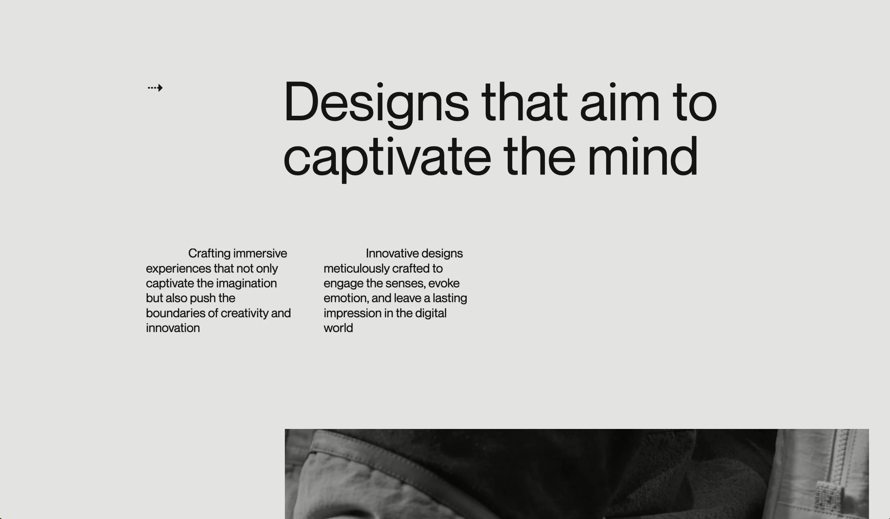
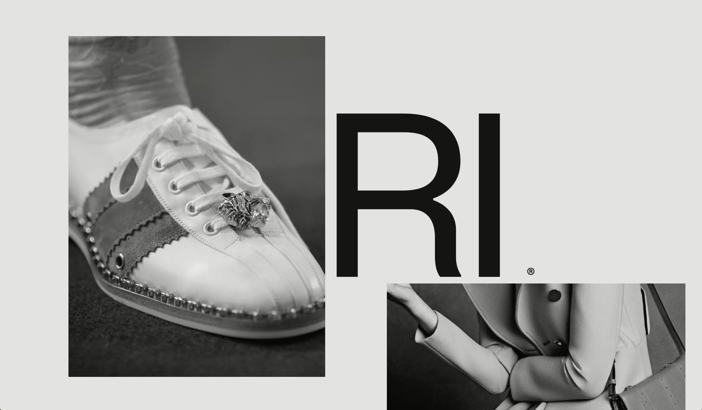
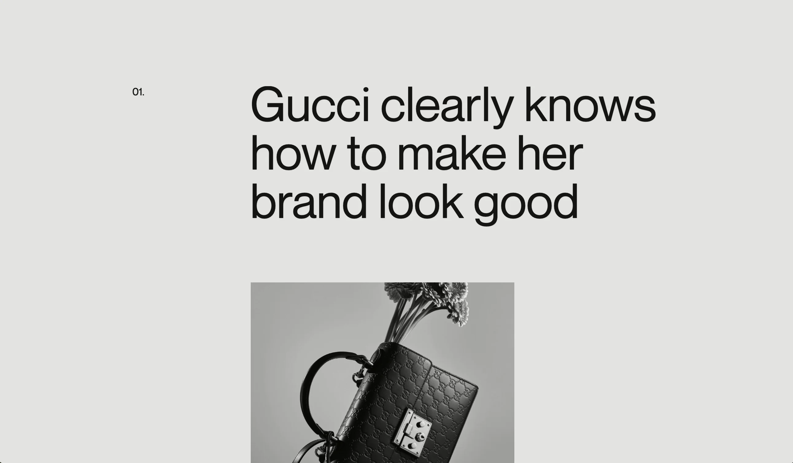
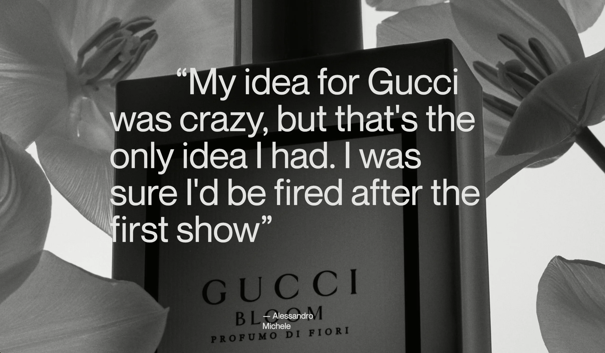
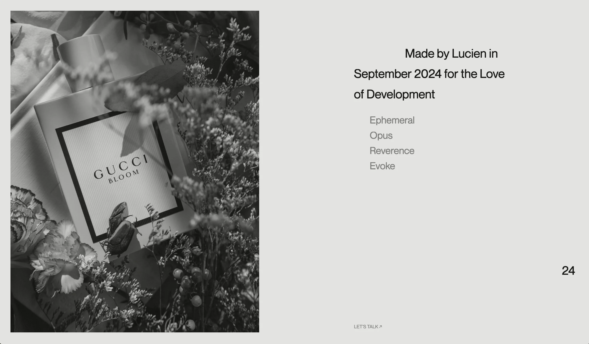

Grid—(02);
(24’).

Web Prototyping & Motion
‘Grid’ is an exploration in Motion and Development research that aims to push the boundaries of the web.
Alignment Break.
Problem;
The idea of ‘Grid’ extended far beyond creating mere visuals. It was essentially testing the limits of web design. The aim was to merge both structure and fluidity in a rather unconventional way, creating a canvas that doesn’t just show random animations but one that feels alive.
Role;
I was the web designer and developer, I sought to create an experience that is profoundly simple yet deeply immersive. Every motion, every transition is deeply considered—crafted from scratch; no libraries, no frameworks but simply native web GL and vanilla JS. The same way an engineer builds with basic elements like glass, timber and concrete.
Framed Shots;
A rather lovely collection containing and exploring my best shots for the project. It’s basically a display of the parts I could very often look back on and say,
“Well that’s fire”
Intro Animation
First Quotation

Transition Section
Second Quotation

Qouted Section

Footer Section

Motion Design
If you noticed this website design features web Gl, to render text animations and images. This is done so as to give the website a ‘Rasterised’ look giving it a particular nature and depth that mere words can’t describe.
Coming Up.

Grid
(02)

Web Prototyping & Motion
‘Grid’ is an exploration in Motion and Development research that aims to push the boundaries of the web.





Up Next
Back to Top
↑
↑